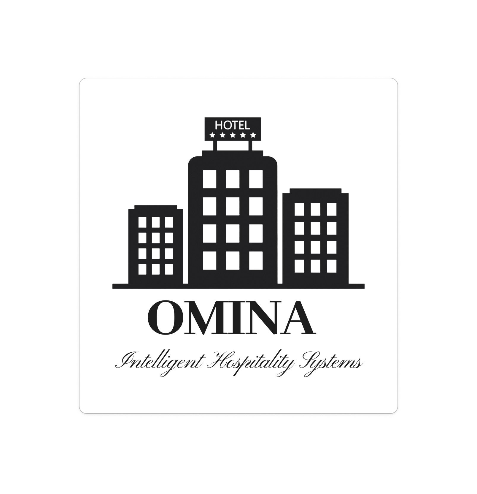
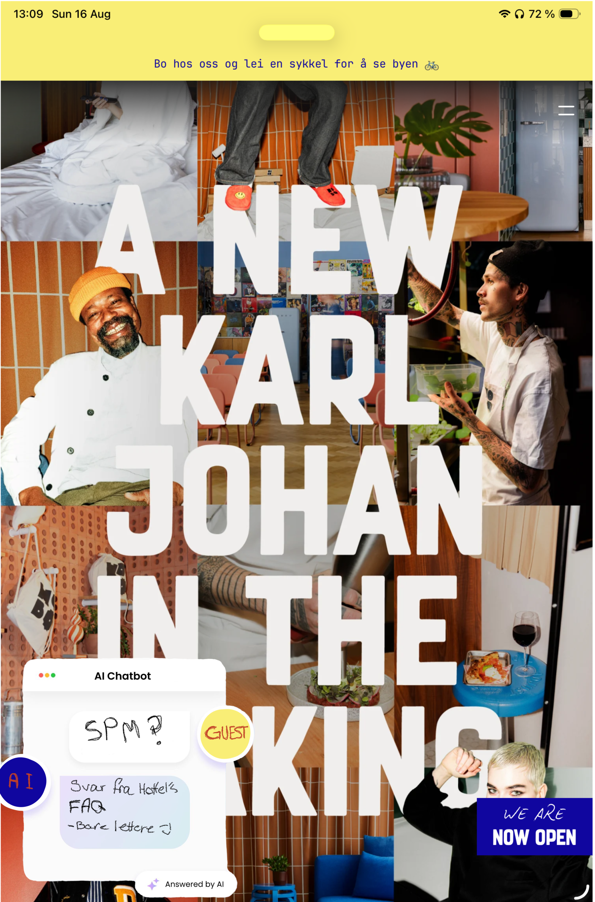
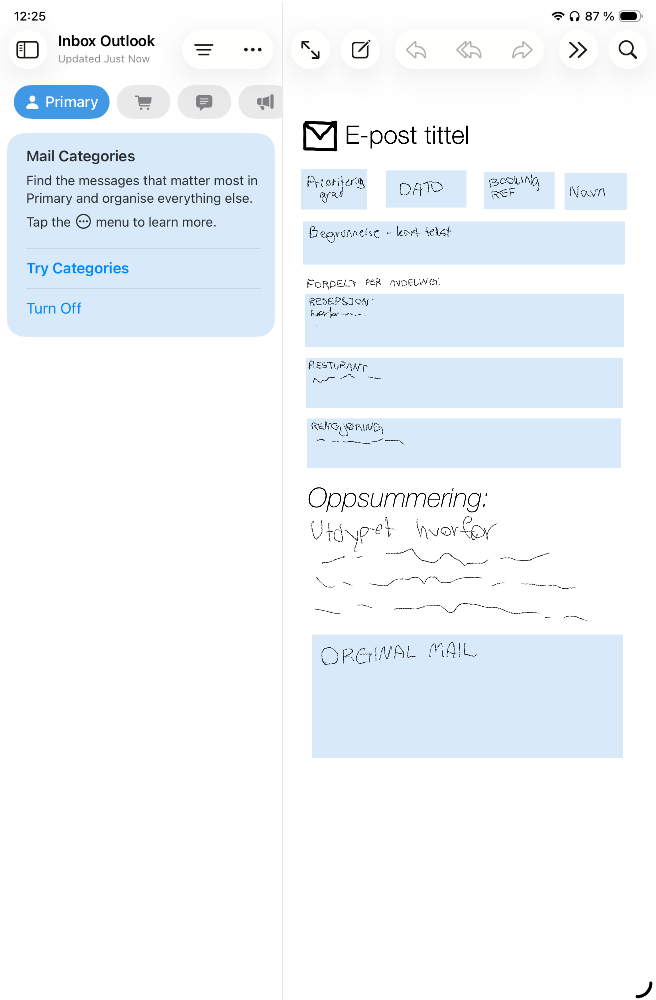
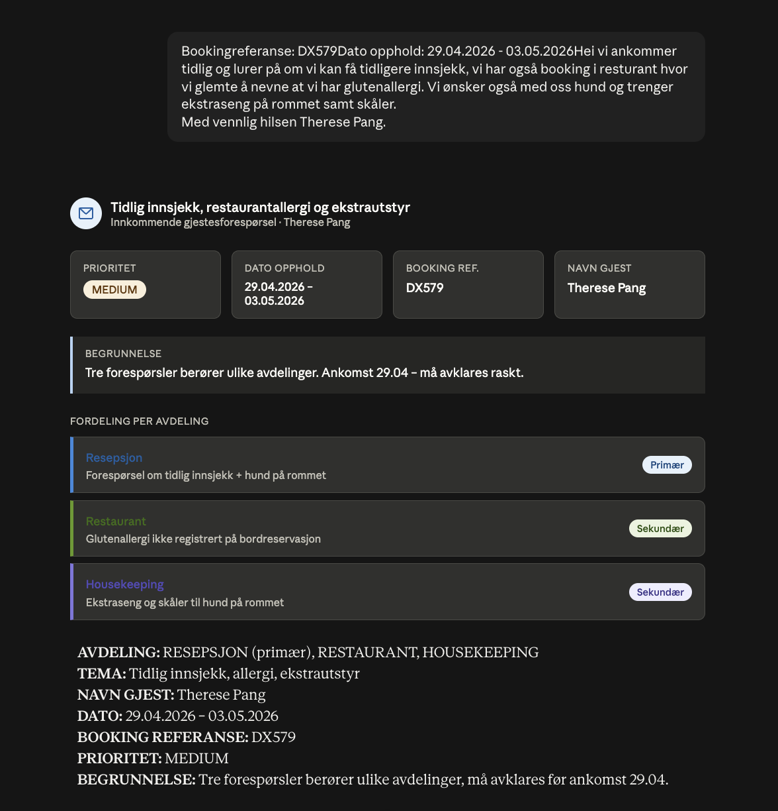

Prosjekt 02 · Konsept & interaksjonsdesign
Omina — Intelligent Hospitality Systems To AI-prototyper som repetative oppgaver i hotellresepsjonen, uten å fjerne mennesket fra gjesteopplevelsen. Basert på intervjuer med fire Oslo-hoteller bygde jeg en løsning som automatisk ruter innkommende e-poster til riktig avdeling, og en FAQ-agent som svarer gjester direkte på nettsiden. Under kan du lese om innsikten bak, prosessen, og se prototypene i bruk.
Hotellbransjen kombinerer mange repeterende arbeidsoppgaver med et
sterkt behov for personlig service.
Resepsjonen fungerer ofte som knutepunkt for hele hotellet og må
samtidig håndtere gjester ansikt til ansikt, telefoner, interne
forespørsler og store mengder e-post. Mange av henvendelsene må leses,
tolkes og videresendes manuelt til riktig avdeling.
Dette skaper unødvendig arbeid og kan føre til at viktige saker blir
forsinket eller feilprioritert.
Samtidig var det tydelig gjennom intervjuene at hotellene ikke ønsket
løsninger som erstatter menneskelig kundekontakt. Personlig service,
fleksibilitet og menneskelig vurdering er fortsatt en viktig del av
gjesteopplevelsen.
Problemstillingen vår ble derfor: Hvordan kan hoteller bruke AI til å
effektivisere interne prosesser og frigjøre tid for ansatte, uten at det
går på bekostning av kundeopplevelsen?
Vi valgte å fokusere på resepsjonen fordi dette var avdelingen der mange
av de daglige henvendelsene samles, og der effektivisering kan frigjøre
tid til mer verdifulle oppgaver: å møte gjester, løse komplekse
situasjoner og skape en god hotellopplevelse.

Prosjektet startet med research på hvordan hotellbransjen bruker
digitalisering og AI i dag. Vi undersøkte blant annet hvordan teknologi
allerede brukes til dynamisk prising, bemanningsplanlegging, analyse av
kundeanmeldelser og reduksjon av matsvinn.
For å forstå behovene i praksis utviklet vi en semistrukturert
intervjuguide med fem hovedtemaer:
Vi kontaktet rundt 20 hoteller gjennom telefon og e-post, og
gjennomførte til slutt fire intervjuer.
Vi snakket med hotellsjefer ved Bondeheimen og Hotel Bristol, samt
resepsjonssjefer ved Hobo Hotel og Radisson Blu Plaza Hotel. Tre av
intervjuene ble gjennomført fysisk, mens ett ble gjennomført digitalt
via Teams.
Etter intervjuene gikk vi systematisk gjennom materialet og
identifiserte mønstre på tvers av hotellene. Vi fant ut at AI allerede
brukes mye i interne prosesser, men at hotellene var mer forsiktige med
AI´ er som kommuniserer direkte med gjestene.
Dette skyldtes særlig ønsket om å bevare en personlig og tillitsfull
service.
På bakgrunn av innsikten utviklet gruppen flere mulige løsningsforslag.
Jeg jobbet med AI-konsepter og prototyping, og videreutviklet to
løsninger: et system for e-post-ruting og en FAQ-agent for hotellets
nettside.
I utviklingen av e-postprototypen testet jeg også ulike måter å
instruere AI-en på. Jeg sammenlignet instruksjoner skrevet i naturlig
språk VS en mer strukturert pseudokode-tilnærming.
Testingen viste at pseudokode ga mer konsistente og forutsigbare
resultater, noe som er viktig når løsningen skal brukes i en operativ
arbeidshverdag.


FAQ-agenten skal redusere mengden repetitive spørsmål som når
resepsjonen, samtidig som gjesten får svar uten å måtte vente på en
ansatt.
Dersom spørsmålet er uklart, sensitivt eller for komplekst, skal
samtalen kunne overføres til en medarbeider. På denne måten kan hotellet
kombinere rask selvbetjening med menneskelig oppfølging.
Agenten håndterer det enkle, mens de ansatte fortsatt har ansvar for
situasjoner som krever empati, skjønn eller personlig kommunikasjon.
Den første prototypen er et system som analyserer innkommende e-post og hjelper resepsjonen med å strukturere og videresende henvendelsen. Når en e-post kommer inn, identifiserer løsningen blant annet:
Systemet kan også se når en henvendelse gjelder flere avdelinger.
En e-post kan for eksempel inneholde spørsmål om tidlig innsjekk,
restaurantreservasjon, allergier og kjæledyr samtidig. I stedet for at
resepsjonisten må tolke og videresende alt manuelt, får de et
strukturert overblikk over hva saken gjelder og hvem som bør følge den
opp.
Prototypen viser også hvorfor AI-en har valgt en bestemt prioritering
eller avdeling.
Dette gjør løsningen mer transparent og gir den ansatte mulighet til å
kvalitetssikre eller overstyre forslaget. AI-en fungerer derfor som et
beslutningsstøtteverktøy, ikke som en endelig beslutningstaker.
Målet er å gjøre informasjonsflyten raskere mellom avdelingene og
frigjøre tid i resepsjonen.
Når riktige personer får relevant informasjon tidligere, kan saken
behandles raskere, samtidig som resepsjonen får mer kapasitet til
gjester og henvendelser som krever menneskelig vurdering.

Resultatet ble to konsepter som viser hvordan AI kan støtte resepsjonen
på ulike nivåer.
E-postløsningen effektiviserer den interne arbeidsflyten, mens
FAQ-agenten hjelper gjesten direkte med enkle spørsmål.
Begge løsningene er avgrenset til konkrete og repetitive oppgaver, slik
at ansatte fortsatt kan ha kontroll over komplekse saker og personlig
gjestekommunikasjon. Prosjektet har gitt meg en mer realistisk
forståelse av AI i arbeidslivet.
Jeg lærte at den største verdien ikke nødvendigvis ligger i å
automatisere mest mulig, men i å finne de riktige oppgavene å
automatisere. AI fungerer best når den løser et konkret problem, gir
tydelig verdi og samtidig lar mennesker beholde kontrollen.
Jeg lærte også hvor viktig kvalitetssikring er.
Selv når AI-genererte svar virker overbevisende, må informasjonen
kontrolleres før den brukes i praksis. Arbeidet med e-postprototypen
viste spesielt hvor mye resultatet påvirkes av hvordan AI-en instrueres.
Strukturerte instrukser og tydelige rammer ga mer stabile resultater enn
åpne formuleringer.
Som teamleder fikk jeg i tillegg erfaring med planlegging, fordeling av
ansvar og samarbeid. Jeg tok tidlig mye ansvar for å sikre fremdrift,
men erfarte at dette også kunne begrense andres eierskap.
I ettertid ville jeg vært tydeligere på forventninger og delegert mer
fra starten. Denne erfaringen har gjort meg mer bevisst på at god
prosjektledelse handler om å skape struktur og tillit, ikke om å gjøre
mest mulig selv.